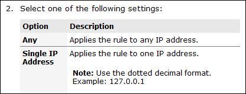

A choice table is used within a step in a task topic to describe a
series of optional choices that a user must make before proceeding.
The
choicetable element is an extremely useful device for
documenting options within a single step of a task.
As the name suggests,
choicetable content is structured in a table, with one
column for the option or choice, and another column for the description of the
option or choice. If column headings are required, they can be specified
through
choptionhd and
chdeschd elements within a
chhead header row. A row within a choice table is defined
with a
chrow element containing an option
(choption) element and a description (chdesc)
element.
The recommended column headings are
Option and
Description.
The structure of the choice table is shown in the code sample:
<choicetable>
<chhead>
<choptionhd>Option</choptionhd>
<chdeschd>Description</chdeschd>
</chhead>
<chrow>
<choption>Any</choption>
<chdesc>Applies the rule to any IP address.</chdesc>
</chrow>
<chrow>
<choption>Single IP Address</choption>
<chdesc>
<p>Applies the rule to one IP address.</p>
<note>Use the dotted decimal format. Example: 127.0.0.1</note>
</chdesc>
</chrow>
</choicetable>
Typical formatting of a
choicetable in an output format

Although more than one
choicetable is permitted in a step, only one should be
used.
The
choicetable has a key column (keycol)
attribute which nominates which column should be treated as row headings. For
most publishing tools, a setting of
0 will result in all of the row content (except
for the header row) displaying in Roman text, while a setting of
1 results in the first (choice) column content
displaying in bold. Although not often appropriate, a setting of
2 will result in the second (description) column
content typically displaying in bold.
The recommended
keycol attribute setting for the
choicetable element is
1.
Rationale
I might do
that, if I thought that they were actually choices. I don't think of
<choices> or <choicetable> as necessarily implying mutual
exclusivity, so a command of "Enter one or more of the following things" could
logically be followed by a <choices>, or a <choicetable>. Given
your example, I think I'd use <choicetable>. If the table isn't really
presenting a smorgasbord of things for the user to choose from, then I might
instead stick a <ul> or <simpletable> into an <info> and put
that into the step. It's less semantically loaded than <choices> or
<choicetable>, though I suspect that it will render very similarly.